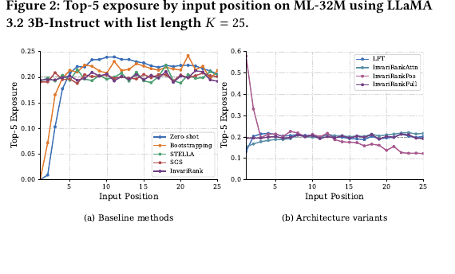

InvariRank
1. 基本信息
- 标题：One Pass, Any Order: Position-Invariant Listwise Reranking for LLM-Based Recommendation
- 方法名：InvariRank
- 作者：Ethan Bito, Yongli Ren, Estrid He
- 机构：RMIT University
- 时间：2026-04-30（arXiv v1）；SIGIR 2026
- arXiv：https://arxiv.org/abs/2604.27599
- DOI：https://doi.org/10.1145/3805712.3809952
- 代码：https://github.com/ejbito/InvariRank
- 本地 PDF：
C:\Users\chaol\Desktop\推荐论文阅读\re-ranking\InvariRank-Position-Invariant-Listwise-Reranking-for-LLM-Based-Recommendation.pdf - 笔记位置：
论文笔记/重排/LLM重排/InvariRank.md - 分类：重排 / LLM listwise reranking / 位置不变性
2. Vault 内相关论文/笔记
- 推荐系统重排最新进展：综述已把本文放在 2026 年 LLM 重排可靠性方向，核心问题是候选输入顺序敏感。
- LLM4Rerank：本文在 Related Work 中引用它作为 LLM-based reranking 两阶段管线的代表背景；LLM4Rerank 关注多准则自动重排流程，InvariRank 进一步处理 listwise LLM reranker 的候选序列化位置偏置。
我检查了现有 CMR、MultiTRON、NAR4Rec、NLGR 和其它 LLM 重排笔记。它们与本文同属重排主题，但没有在当前论文里构成直接基线、继承、替代或明确对照关系；因此不建立额外双向论文链接，也不修改 CMR。
3. 一句话总结
InvariRank 认为 LLM listwise reranking 的不稳定来自候选集合被序列化后引入的顺序通道：候选间 causal attention 泄漏和 RoPE 位置 offset drift。它用结构化 attention mask 隔离候选、用共享位置框架对齐每个候选到用户上下文的相对位置，再用 LambdaRank 做列表级训练，从而在单次前向里保持接近 LFT 的排序效果，同时让候选排列变化下的输出几乎不变。
4. 引言：为什么候选顺序是可靠性问题
LLM 被用于推荐重排时，常见方式是两阶段管线：前面的 retriever 或 ranker 先取一个固定候选集，LLM 接收用户历史、任务指令和候选描述，然后一次性给候选打分或重排。这个设定很自然，因为 reranking 阶段候选数量较小，LLM 可以把 item 文本、用户上下文和自然语言任务合在一个 prompt 里处理。
问题在于推荐候选本质上是集合，而 decoder-only LLM 的输入是序列。候选集合完全相同，只要输入顺序换一下，模型的 token attention、位置编码和最终 item score 都可能变化。于是 ranking 不再只是用户偏好和 item 内容的函数，而会混入 prompt serialization 的任意性。
作者把这定义为可靠性问题，而不是普通 prompt sensitivity：如果同一个候选集在不同序列化下会把同一 item 一会儿推前、一会儿拉后，那么离线指标只评估某一次排序质量就不够。系统还要回答一个更基础的问题：这个 reranker 是否是一个对候选集合定义良好的排序函数？
本文的贡献是把 permutation invariance 做成模型计算的性质，而不是靠多次 permutation ensembling、post-hoc calibration 或训练时的 invariance loss 去缓解。
5. 相关工作位置
论文把已有路线分成几类：
- listwise LLM reranking：LLM 同时看候选列表和用户上下文，适合利用全局上下文，但会继承序列模型的位置敏感性。
- 推理时稳健化：例如 permutation aggregation、bootstrapping、greedy selection，通过多次候选排列和聚合减少不稳定，但推理成本变高。
- post-hoc calibration：先让模型打分，再用位置偏置矩阵等方式修正分数。问题是打分过程已经受位置影响，校准只能事后补救。
- 训练时正则或 position-aware fine-tuning：惩罚不同 permutation 下的输出差异，但模型计算中仍能访问候选顺序信息。
论文特别提到 ALRO 这类训练时方法：它把 ranking 写成生成序列，例如 A > B > C，用 loss 鼓励 invariance。InvariRank 和它的关键区别是，本文处在两阶段推荐 reranking 场景，且直接改 attention 和 position encoding，让模型在前向计算时就不能利用不该利用的候选顺序通道。
6. 方法总览

Figure 1 是全文核心设计图，可以按三层理解：
- Input Prompt：用户历史和任务指令被包在
[SPAN]...[/SPAN]里，候选 item 分别包在[ITEM]...[/ITEM]中。模型仍然以一个序列接收所有内容。 - Token & Pos. Indices：普通 decoder-only LLM 会给后面的候选更大的位置索引；InvariRank 让每个候选都共享同一个相对位置框架。
- Guided Information Flow：结构化 attention 允许候选看共享上下文和自身 token，但阻断候选之间相互看；共享 positional framing 再让每个候选与用户上下文之间的 RoPE 相对 offset 一致。
这张图解释了本文的基本取舍：为了稳定性，模型不让候选在前向过程中互相影响；为了仍保留列表级学习，候选 score 会在训练 loss 里被成对比较。
7. 3.1 Permutation-equivariant listwise ranking
候选集合记为 ， 是候选索引的任意排列。理想 reranker 应满足：
意思是：候选输入顺序被重排后，同一个 item 的 score 不应改变，只是 score 在输出列表中的位置随 item 一起重排。这严格说是 permutation equivariance；对最终排序结果来说，它带来的是候选集合层面的稳定 ranking。
输入序列构造为：
其中 是 instruction， 是用户历史， 是候选集。模型不是生成完整排序字符串，而是把 LLM 当成 scoring function ：对每个候选 ，取其 [ITEM] span 内 token-level log-probability 的均值作为标量 score 。因此模型输出是一组候选分数，不是一个 request-level 单分，也不是逐 token 生成最终列表。
这个设计的好处是所有候选可以在一次 forward pass 中得到 score。隐藏条件是候选边界必须可识别，且每个候选 span 的 token log-prob 能稳定映射回对应 item。
8. 3.2 顺序依赖来自哪里
标准 causal attention 和位置编码下，候选 的分数可以写成：
表示排在它前面的候选， 表示序列化位置。这里有两个顺序依赖通道：
- Cross-candidate attention leakage：后面的候选 token 可以 attend 到前面候选 token。候选 A 放在候选 B 前面时，B 的表示会混入 A 的信息；换一个顺序，混入的信息也变。
- RoPE-induced offset drift：RoPE 使用相对位置关系影响 attention。如果候选前面多了其它候选，它到共享用户上下文的相对 offset 变大；即使候选内容没变，attention pattern 也会变。
所以位置偏置不是单纯“模型喜欢列表前面的 item”。更准确地说，候选序列化改变了模型能看到的上下文和 RoPE 相对几何结构，导致 item score 不再只依赖 和 。
9. 3.3 Structured attention
为去掉候选间干扰，InvariRank 定义了一个 segment mask。令 是共享上下文 token 集合， 是候选 的 token 集合。允许的 attention 关系是：
实际 mask 是 。也就是说：
- 共享上下文内部仍按 causal mask 自己处理；
- 候选内部 token 可以看同一候选内允许看的 token；
- 候选 token 可以看共享上下文；
- 候选 不能看其它候选 。
这样候选分数变成：
这个式子是本文方法成立的关键。候选之间在前向表示上被隔离，所以输入顺序变化不会让某个候选多看到或少看到其它候选。要注意，这也带来限制：模型主动放弃了候选间的细粒度比较信号，例如“这两个候选太相似，应该压低一个”。论文后面也把这一点列为主要 limitation。
10. 3.4 Shared positional framing
即使候选之间不能互相 attend，位置编码仍然可能引入顺序依赖。标准序列中，第一个候选的 token 位置紧跟用户上下文，第二个候选的位置会再往后偏移一段。RoPE 下，候选 token 和用户历史 token 的相对 offset 会随候选序列位置改变。
InvariRank 的处理是共享位置框架：
- 中 token 的位置是 ；
- 每个候选 span 都重新使用 ；
- 这个候选位置分配不依赖 ，也不依赖候选排列 。
于是对任意排列 ，共享上下文 token 和候选 token 的相对位置满足：
这里有一个容易忽略的条件：多个候选可以复用同一套候选位置，是因为前面的 structured attention 已经阻断了候选间 attention。否则不同候选 token 共享位置但又相互可见，会引入新的歧义和干扰。换句话说，shared positional framing 不是单独可用的补丁，它依赖候选隔离让“每个候选在自己的局部坐标系里被评分”成为合法操作。
11. 3.5 Listwise training objective
前向计算里候选表示是条件独立的，但训练目标仍然是 listwise。论文使用 LambdaRank-style pairwise logistic loss。对每个满足 的候选对：
最终 loss 对所有 preference pairs 取平均。 表示交换 两个候选会带来的 nDCG 变化，因此越影响排序指标的 pair 权重越大。
这一步回答了一个关键疑问：如果候选在前向中不能交互，模型还算 listwise 吗？本文的答案是：计算图里的候选表示隔离，但 loss 同时看同一列表内所有候选分数，并按排序指标变化加权 pairwise preference。因此列表级监督保留在训练目标中，而 permutation invariance 由模型结构保证，不靠 loss 惩罚来“学出来”。
12. 实验设置
实验使用两个带时间戳显式反馈的数据集：
- MovieLens-32M
- Amazon Books
每个用户按时间排序，切成 70%/10%/20% train/validation/test。每个 query 使用最近 20 条历史交互作为用户历史，用未来交互构造 relevance，避免时间泄漏。
第一阶段 retriever 使用 LightGCN，并把 rating 的交互当作 implicit positives。每个 query 构造 的 reranking list，保证有 future positives 时会放入候选，其余位置用检索或采样的 non-interacted items 补齐，non-interacted relevance 设为 0。
模型使用 LLaMA 3.2 3B-Instruct 和 Mistral 7B-Instruct，LoRA rank 16、。候选分数仍是 [ITEM] span 的 mean token log-probability。训练 500 optimizer steps，最大序列长度 4096，batch size 16，学习率 。
对比方法包括：
- Zero-shot：不微调的 LLM reranker。
- SGS：多次 forward 的 greedy ranking。
- Bootstrapping：多 permutation 聚合。
- STELLA：post-hoc 位置偏置校准。
- LFT：与 InvariRank 相同 scoring function 和 LambdaRank objective，但使用标准 causal attention 和位置编码。
评价分两类：排序效果用 HR@ 和 nDCG@，；permutation robustness 用 Kendall’s 、Spearman’s 和 top-5 agreement。每个候选集会在多个 permutation 下评估，再对指标取平均。
13. 主结果

Table 1 的核心结论是：LFT 排序效果最强，但仍然对候选顺序敏感；InvariRank 稍微牺牲一部分 nDCG，却把 permutation robustness 推到接近 1。
具体看 LLaMA-3B：
- ML-32M 上，LFT nDCG@10 为 0.8486，InvariRank 为 0.8166；但 InvariRank 的 、，高于 LFT 的 0.8861 和 0.9708。
- Books 上，LFT nDCG@10 为 0.4108，InvariRank 为 0.3871；但 InvariRank 的 、，明显高于 LFT 的 0.7758 和 0.9020。
Mistral-7B 上趋势相同。InvariRank 在 ML-32M 的 、，Books 上 、。这说明架构不变性不是某个 backbone 的偶然现象。
和 robustness baselines 比，bootstrapping 和 SGS 确实提高稳定性，但它们要多次 forward。InvariRank 的优势是单次 forward，同时获得更高的 rank correlation 和 top-5 agreement。STELLA 在这里不占优，因为它主要是校准位置偏置后的排名效果，而不是保证 permutation 后 preference order 一致。
14. 位置偏置与曝光

Figure 2 看的是 top-5 exposure by input position。理想情况下，若每个输入位置没有系统性优势，曝光曲线应接近均匀。
左图是 baseline methods。Zero-shot 和 bootstrapping 对前几个输入位置有明显偏置，说明 LLM 容易把序列前部当成更重要的候选区域。SGS 和 STELLA 能让曲线更平，但它们不是直接保证候选 score 的 permutation equivariance。
右图是架构变体。只用 shared positional framing 的 InvariRankPos 在最前面位置有很高曝光，说明仅修正 RoPE offset 不足以解决候选间 attention 泄漏。InvariRankAttn 和 InvariRankFull 更接近均匀，说明 structured attention 是去除 order dependence 的主驱动，shared positional framing 在其上进一步修正残余位置偏置。
15. 消融

Table 2 把两个组件拆开看：
- InvariRankPos：只用共享位置框架，HR@5 为 0.6423、nDCG@5 为 0.2465，、。这说明位置框架单独使用效果弱，无法阻断候选间信息泄漏。
- InvariRankAttn：只用结构化 attention，HR@5 提升到 0.9690、nDCG@5 到 0.7298，、。候选隔离一旦加上，排序效果和稳定性都大幅恢复。
- InvariRankFull：组合两者后，HR@5 为 0.9700、nDCG@5 为 0.7260，、、T@5 为 0.9906。
这里要保留一个细节：Full 的 nDCG@5 略低于 Attn-only 的 0.7298，但 robustness 显著更高。作者的主张不是“所有效果指标都最高”，而是“在竞争性排序效果下，把 permutation robustness 推到接近完美”。这正是 InvariRank 的 effectiveness-robustness trade-off。
16. 讨论与局限
论文的核心判断是：对 LLM listwise reranking 来说，仅靠 fine-tuning 提升 ranking effectiveness 不够。LFT 虽然 nDCG 最高，但候选排列一变，排名仍会变。可靠的 reranker 需要结构上消除顺序通道。
但 InvariRank 的代价也清楚：
- 候选隔离损失比较信号：structured attention 不让候选互相看，因此模型难以在前向中建模相似候选之间的冗余、互补、替代或 diversity trade-off。
- 固定候选规模评估：实验只在 的候选集上做，尚未证明更大候选列表、不同展示结构或工业低延迟链路里的表现。
- 任务范围有限：实验是 MovieLens-32M 和 Amazon Books 推荐数据，没有覆盖 search reranking、RAG reranking 或更复杂的多目标重排。
作者建议未来做 hybrid design：在保持 permutation invariance 的条件下，引入受控的 cross-candidate interaction。这是一个重要后续方向，因为实际重排不能永远放弃候选间关系。
17. 结论与记忆锚点
InvariRank 的价值在于把 “LLM listwise reranker 会随候选输入顺序变化” 这个可靠性问题具体拆成两个结构原因，并给出一个单次 forward 的架构级解法。
记忆锚点：
- 候选是集合，decoder-only LLM 输入是序列，这个 mismatch 会让同一候选集因排列不同而输出不同 ranking。
- 顺序依赖有两个通道：cross-candidate attention leakage 和 RoPE offset drift。
- Structured attention 让候选只能看用户上下文和自身内容，使 成立。
- Shared positional framing 让每个候选与用户上下文之间的相对位置一致；它依赖候选间 attention 已被阻断。
- LambdaRank loss 保留 listwise supervision，但 invariance 来自模型结构，不是来自多 permutation 训练。
- 主结果要记成 trade-off：LFT 排序效果最高，InvariRank 排序略低但稳定性接近完美。
18. 图表覆盖检查
- Figure 1：方法总览，已解释并嵌入。
- Table 1：主结果，已解释并嵌入。
- Figure 2：位置曝光与架构变体，已解释并嵌入。
- Table 2：架构消融，已解释并嵌入。